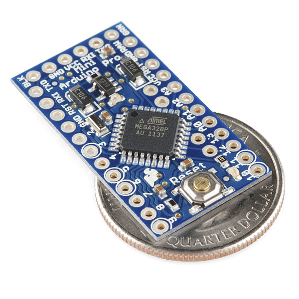
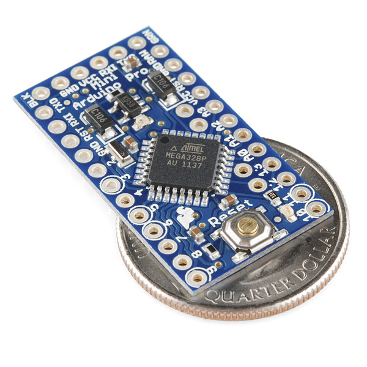
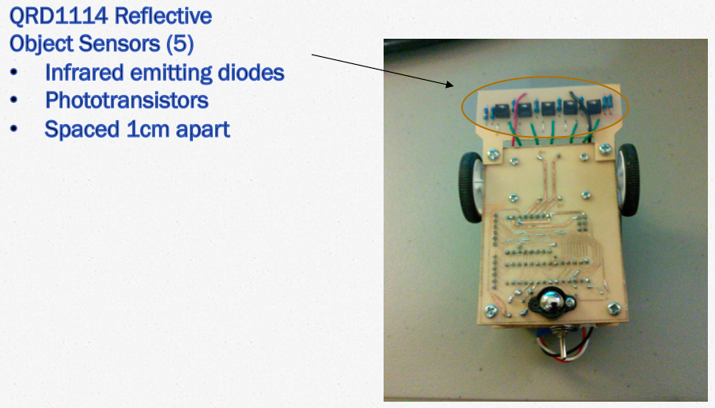
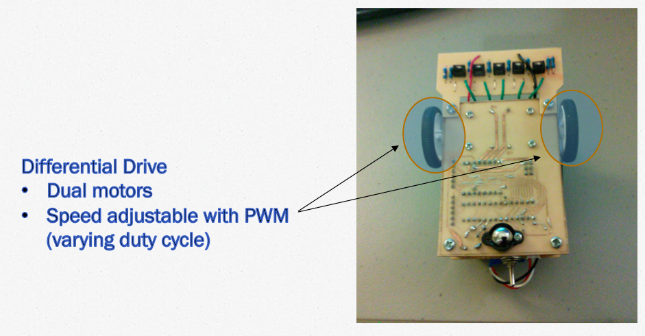
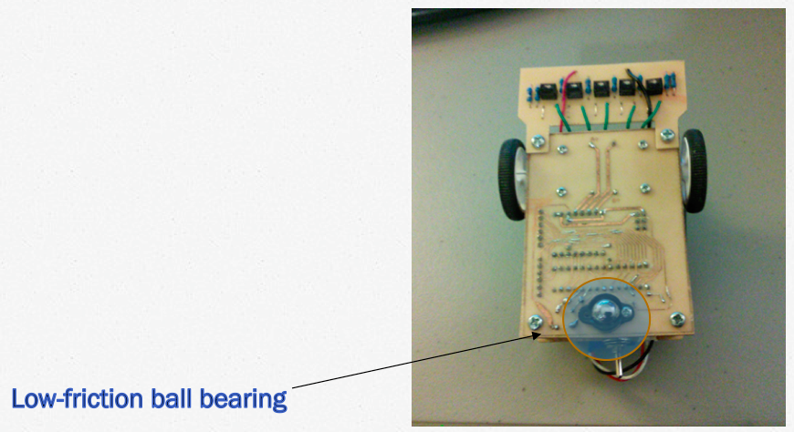

Automating your life:
Arduino hacking for fun and profit (but mostly fun)
Sudo Soldiers
04.30.2014
Hi. I’m Nat.
- CS, AA, TA, NOA
- Programming, robots, translation
- www.natguy.net
Today we'll talk about
Arduino
What's Arduino?
- Microcontroller: miniature computer on a board
- Has processor, RAM, flash memory, EEPROM
- Programmable in C++
- Can also inline AVR assembly
- Easy to connect to other electronics
 

- Started as student project in Italy in 2005
- Open-source
- Multiple form factors available, with different components
- Popular models include the Uno, Mega, and Mini
- Inexpensive: $25, $46, and $10 for models above
A closer look at Arduino Uno
- 16 MHz, 8-bit CPU
- 32kB flash memory, 1kB EEPROM
- 2kB SRAM
- USB interface
- Easy to connect to other electronics
Connecting to Your Computer
- USB from Arduino board into computer
- Compiled code is sent over and loaded onto flash memory
- Afterwards, can unplug and use without computer
- Similar to game console development
Programming Basics
- Start with setup() function
- Called once when sketch starts
- Used for initializing variables, pin modes, etc.
- Next, add functionality to loop() function
- Loops ad infinitum
- Usually used for main program logic
Simple Example
int ledPinNumber = 3; // LED connected to digital pin 3
int period = 500; // LED on for 500 ms, off for 500ms
void setup()
{
// Set the LED pin to output mode
pinMode(ledPinNumber, OUTPUT);
}
void loop()
{
// Turn on LED
digitalWrite(ledPinNumber, HIGH);
// Wait
delay(period);
// Turn off LED
digitalWrite(ledPinNumber, LOW);
// Wait
delay(period);
}
Let's give it a try!
- Motors and servos
- SD cards
- Audio processing and playback
- LCD screens
- Wireless communication
- Almost any game controller you can imagine
Less Simple Demo
- Robot with Arduino board
- Wheels driven by two different motors
- Infrared sensors
- Want robot to be able to follow black lines
- Line will be directly in the center of robot
- Drive forward, always staying on the line
A closer look
A closer look
A closer look
Let's look at the code!
Other Projects
Simon Says with SNES Controller
ArduCopter
Shiny Pokémon Getting
Photobioreactors
- Biomonstaaar automated bioreactor
- Grows algae
- Automatically controls heat, humidity, light, etc.
- Controllable via web browser
Anything you want!
Resources
- Initial steps for setting up your board
- Project code examples
- Sparkfun Arduino Buying Guide
- Sparkfun (very user-friendly electronics store)
- Arduino inventor's kit